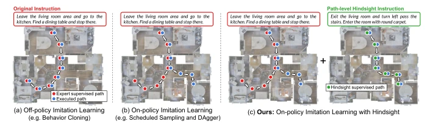
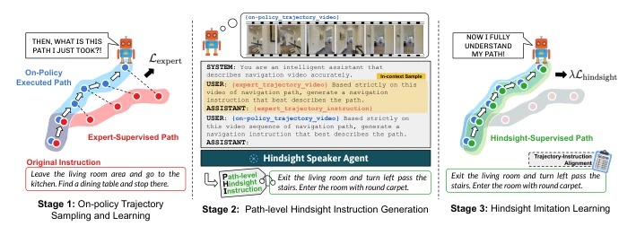
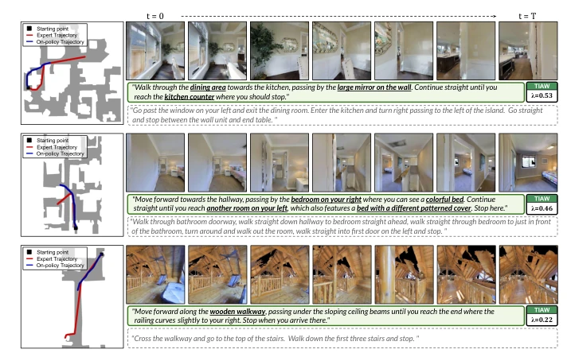
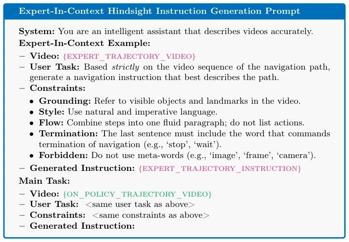

This paper adds a "regret remedy" to the on-policy training of VLN. In traditional methods, when the agent deviates, the instruction remains the original one, leading to semantic mismatch. Φ-Nav directly instructs the LVLM to "fabricate" a new instruction for the deviated path, then continues learning. This approach is quite clever, equivalent to turning "errors" into "new samples". However, the cost is significant, relying on large models like Qwen2.5-VL to generate instructions in real-time, causing inference costs to skyrocket. Moreover, LVLMs are prone to hallucinations; although the authors devised alignment weights to filter, essentially it is still betting on the reliability of large models. For teams with limited computing power, this method might be a bit "over-indulgent". However, it indeed solves the pain point of missing semantic supervision in on-policy exploration, with significant improvement in sample efficiency, making the idea worth referencing.
VLN tasks require agents to navigate in 3D environments based on natural language instructions. To enhance robustness, modern systems often adopt on-policy exploration (such as Scheduled Sampling [6] and DAgger [45]), allowing agents to act under their own policies to be exposed to a wider state distribution. However, this leads to a core problem: when the agent deviates from the expert demonstration path, the original instruction no longer matches the actual visual stream, causing a semantic supervision gap. Existing off-policy methods rely on static expert paths [3] and cannot utilize exploration data; while traditional on-policy methods broaden the state space, they are still limited by static instructions, resulting in a large number of exploration trajectories lacking semantically aligned text supervision. Although THER [14] and HSL [35] use language-guided hindsight signals, they mainly target structured goal spaces. This paper aims to fill this gap, extending hindsight learning to time-continuous trajectory-level instruction relabeling.

Fig. 1: Conceptual comparison of VLN training strategies. (a) Off-policy IL relies on static expert paths, failing to account for agent exploration. (b) On-policy IL exposes the agent to exploratory states but remains semantically limited to the orig- inal instruction, creating a supervision mismatch. (c) We utilize path-level hindsight relabeling to generate new instructions for exploratory trajectories, transforming devi- ations into meaningful training signals.
Φ-Nav adopts a three-stage dual-supervision loop. In the first stage, the agent executes on-policy trajectory sampling while receiving expert action feedback. The second stage is the core innovation, utilizing a pre-trained LVLM as a "Hindsight Speaker Agent" to synthesize path-level hindsight instructions based on actual visual observations. To avoid distribution shift, Expert-In-Context Learning is introduced, providing expert trajectory-instruction pairs as examples to ensure generated instructions are consistent with the training distribution in style and structure. The third stage performs hindsight imitation learning, treating synthetic trajectory-instruction pairs as additional expert demonstrations. To prevent LVLM hallucinations, Trajectory-Instruction Alignment Weighting is designed, calculating coarse-grained and fine-grained (landmark noun) similarity between video and text via CLIP encoding to adaptively adjust the weight of supervision signals. The total loss function combines expert loss and weighted hindsight loss, ensuring exploration trajectories can also be converted into effective training signals.

Fig. 2: Overview of the Φ-Nav pipeline. In Stage 1, the agent samples a trajectory while being supervised by expert actions. In Stage 2, the agent analyzes its path in hindsight to generate a verified instruction that aligns with the observed visual stream. Lastly, in Stage 3, the agent re-evaluates its past decision points under the guidance of this new instruction, learning to ground its actions with semantic supervision that aligns. Full prompt is presented in the Appendix.
Evaluated on R2R-CE and RxR-CE datasets. Baselines include on-policy methods such as CMA [31] and ETPNav [2]. Metrics cover SR, SPL, NE, etc. Results show that Φ-Nav improves SR by approximately 1.98% (CMA) and 5.37% (ETPNav) on R2R-CE val unseen, and also shows stable improvement on RxR-CE. Ablation studies show that trajectory-instruction alignment weights are superior to fixed weights, and using landmark-aware alignment yields better results. Regarding LVLM backbone networks, Qwen2.5-VL-7B performs best. Additionally, sample efficiency analysis shows that Φ-Nav only requires 90% expert data to surpass the baseline best results, proving its data utilization efficiency.

Fig. 3: Trajectory–Instruction Alignment. Generated hindsight instructions are shown in green boxes, with major landmarks highlighted in bold and underlined. The gray text below each corresponds to the original expert instruction.
其他图片Other Figures

Fig. 5: Prompt used by the Hindsight Speaker Agent with an expert-in-context exam- ple to generate instructions from on-policy trajectories. Note that the <> marks are placeholders for actual texts.